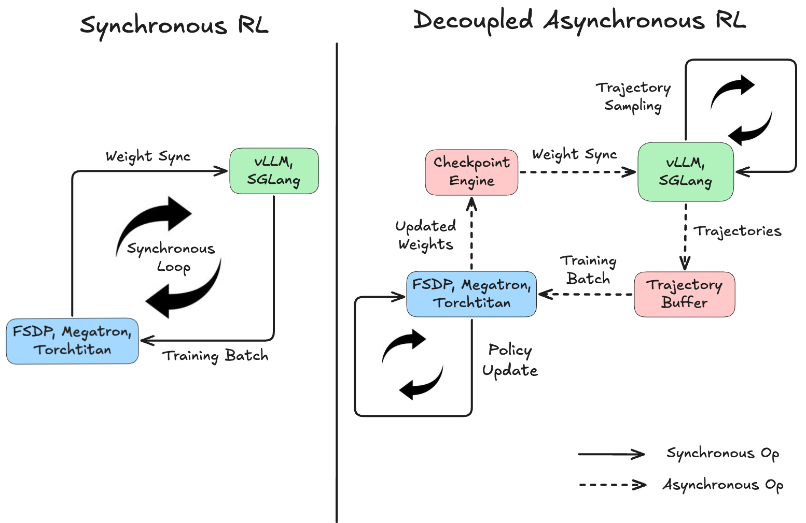
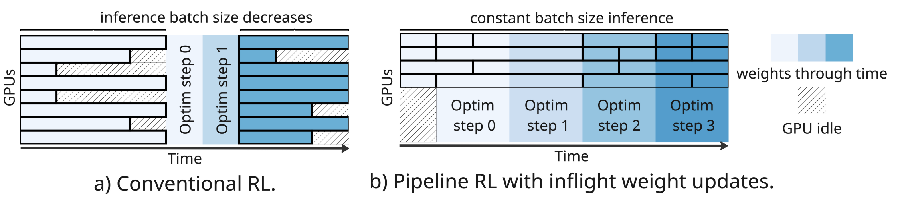
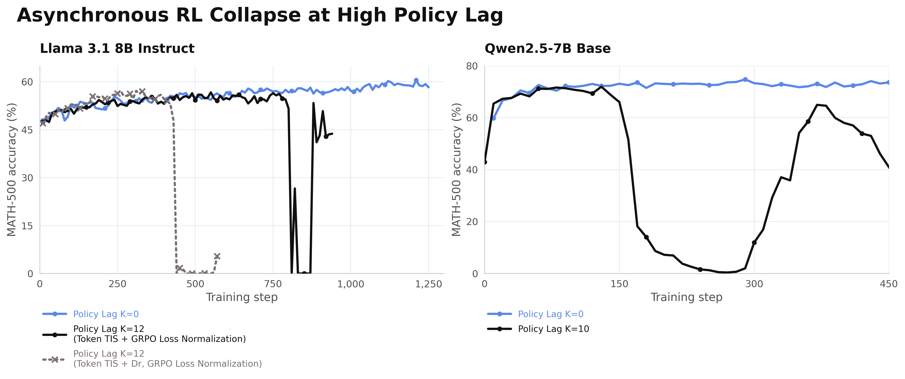
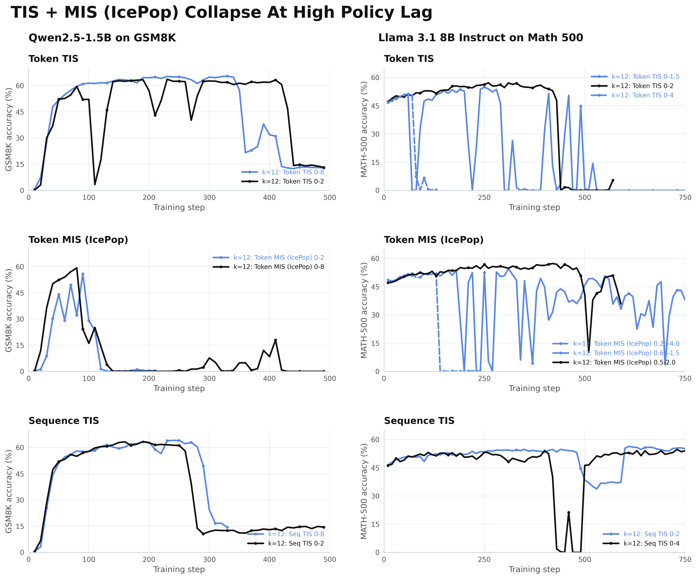
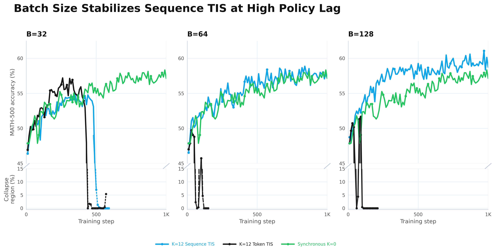
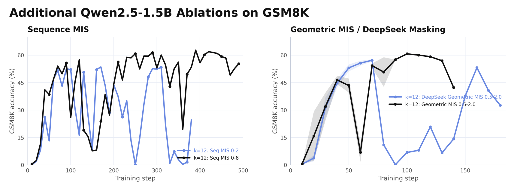

Table of Contents
Async RL has become the default for large-scale RL post-training. Frontier open-weights labs — GLM-5, Ring 1T, DeepSeek V3.2, Minimax M2.5, Qwen 3.5, Intellect-3, Nemotron-3 Super, and Laguna-M.1 — report 2–3× faster throughput over synchronous pipelines, each with its own approach to keeping training stable. This is an attempt to survey that landscape: what does each lab do? What are the shared failure modes? Where do things currently stand?
TL;DR
- async RL decouples rollout and training, giving 2-3x throughput, but the stale trajectories create off-policy instability
- capping policy lag improve stability at the cost of limiting speedups, especially for long-horizon tasks.
- Nearly all frontier open-weight labs use async RL, but with their own fixes for two separate problems: policy lag (algorithmic) and numerical mismatch between engines (systems)
- a survey of current algorithmic and system fixes and why none are robust at high policy lag
- Sequence-level importance sampling is the estimator that scales with compute, while token-level estimators become structurally inconsistent at high policy lag.
- The frontier is still messy: the low-bias compute scaling hypothesis, collapse diagnostics, and practical variance control remain open questions.
The Larger Landscape: Frontier Post-Training
Frontier post-training is no longer a single SFT-to-RL recipe. The emerging pattern is a stack of methods, each solving a different bottleneck:
SFT and offline distillation teach the model what good behavior looks like — fast and stable, but limited to trajectories the model didn't generate itself. On-Policy Distillation goes further by having the model generate its own trajectories, though its ceiling is still set by teacher capability. Self-distillation ( OPSD / SDPO) removes the external teacher entirely, letting the model supervise itself under richer context: either from a hint, a verified answer, or environment feedback. Applied Compute's RMSD extends this into production with a filtered loss mask for out-of-distribution tasks. improving data efficiency and training stability. But in all cases, the ceiling is determined by the data.
RL's role remains fundamental: the model searches through its own policy space, improvements compound with training, and the ceiling is set by the verifier rather than any existing data or teacher.
Training multiple RL objectives simultaneously is tricky, which is why MIMO proposed multi-expert pipelines that train domain specialists independently and consolidate them via On-Policy Distillation. Later also adopted by DeepSeek V4, this Multi-Teacher On-Policy Distillation (MOPD) allows each domain to reach its own ceiling before the specialists are merged.
As long-horizon RL becomes central to frontier post-training, the sampling cost becomes the critical bottleneck. So what systems changes can make RL faster without sacrificing performance?
What is Async RL and Why Use It?
Reinforcement Learning has a big systems problem in the age of reasoning: sampling long trajectories is expensive. In standard on-policy RL, you must first generate responses with the current model for your prompts, and only then train on those responses. This makes the loop conceptually simple, but it means a significant amount of GPUs might be idle while waiting for the last few trajectories to finish.
Asynchronous RL removes this bottleneck by disentangling generation and training into two independent loops. As the diagram below shows, rollout workers keep producing trajectories while the trainer keeps updating the policy, no waiting required:

This decoupling is why many practical RL systems have moved to async pipelines, and why nearly all major open weight releases already adopt asynchronous RL at scale. Even before RL for reasoning became popular, AsyncRLHF was the first to formally propose and study async RL training for LLMs. Nearly all open-source frameworks implement now this pattern. AReaL and LlamaRL are the most widely cited research implementations, and PipelineRL (ServiceNow) improves on them with in-flight weight syncing. SkyRL (NovaSky/UC Berkeley) and prime-rl (Intellect-3) are modular framework good for research, while VeRL (ByteDance) is an easy to use highly-featured system. TorchForge (Meta/PyTorch) uses TorchTitan as its production-grade training infra and Monarch for fault-tolerant scheduling, though development has paused as Meta consolidates into TorchTitan. On the lab side, Slime (Zhipu/GLM-5) and Forge (Minimax) are battle-tested production systems.

The catch is that the generated data is now “stale”. The policy used to produce those trajectories is no longer exactly the same as the policy being trained. This means async RL is off-policy.
In principle, we can use importance sampling to correct this mismatch. Formally, the off-policy objective use importance sampling to reweight each trajectory \(\tau\) by how much more (or less) likely the current policy \(\color{green}{\pi_\theta}\) thinks it is compared to when it was generated by the inference policy \(\color{blue}{\mu}\):
The importance-sampling (IS) ratio is doing the corrective work. But as the policy drifts further from the behavior policy, those ratios can become extreme, and that's where the instability starts to appear.
The Staleness Problem
A useful way to describe Async RL’s inherent policy mismatch is with policy lag \(K\): the number of optimization steps by which the training policy is ahead of the inference policy. When \(K=0\), training is fully on-policy. As \(K\) grows, the trajectories becomes more stale and the KL divergence between Policy and Inference increases.
So how do we prevent this staleness from derailing our runs? The most direct approach is to cap policy lag at some \(K_\text{max}\), either by training on samples in a FIFO queue as they arrive from the inference engine, as in Minimax's windowed FIFO scheduling, or by discarding samples with policy lag \(\geq K_\text{max}\), as in GLM-5's policy-lag cutoff. Both strategies impose an explicit staleness budget on what enters the training loop.
But capping \(K_\text{max}\) can directly reduce the throughput gains from async RL.
There’s a similar analogy to regular roofline model for GPU work (See JAX-ML scaling book, §1 for more details). The essence of the model is that for a matmul \([B,D]\times[D,F]\), arithmetic intensity scales as \(\approx B\) for \(B \ll D, F\). Below the hardware's peak arithmetic intensity, the operation is memory-bound: compute idles waiting for data. Above it, you're compute-bound: hardware is fully utilized. In other words, there's a critical batch size \(B^*\) below which you aren’t fully utilizing your hardware.
Async RL has a similar structure. Define the steady-state policy lag as the policy lag that naturally accumulates when the system runs uncapped:
When \(K_\text{max} < K_\text{steady}\), the trainer periodically exhausts the rollout buffer and stalls. This is the rollout-bound regime, the async RL equivalent of memory-bound. When \(K_\text{max} \geq K_\text{steady}\), the buffer always has samples ready and training never waits. This is the training-bound regime, where you get the fastest step times. Thus, as \(K_\text{max}\to\infty\), Async RL reaches its theoretical throughput ceiling: the speed you would get if you imposed no staleness constraint at all.
However, long-horizon tasks, exactly where async RL's throughput advantage matters most, naturally push \(K_\text{steady}\) up. Rollout latency scales with sequence length, so longer sequences mean higher natural policy lag. Look at what happens as sequence length grows:

At short sequences, even \(K=4\) gets you close to the full async speedup. But as sequences get longer with harder reasoning tasks, more tool use, and longer-context problems, \(K=4\) async achieves less and less of the full \(K=\infty\) speedup. This means longer and longer-horizon tasks create more pressure to push policy lag \(K\) up.
How Do We Stabilize Asynchronous RL?
The systems speedups from Async RL don’t come for free. As policy-lag grows, the training can often become unstable and crashes.

So how do we avoid collapse? For Async RL, there are two separate sources of this instability, and they need different fixes:
Off-policy bias from policy-lag pushes push IS ratios into extremes, making gradient estimates noisy. This is an algorithmic problem. Numerical mismatch between the rollout and training engines are amplified at frontier scale training. This is a systems problem.
Algorithmic Controls: Taming the IS Ratios
To stabilize asynchronous RL at scale, the frontier open-weight labs have all designed off-policy algorithmic controls to control importance sampling ratios, used by GLM-5, Ring 1T, DeepSeek V3.2, Minimax M2.5, Intellect-3, Nemotron-3 Super, and Laguna-M.1.
| Method | Description | Used In | Biased? |
|---|---|---|---|
| Truncated Importance Sampling (TIS) / CISPO | Clips outlier importance sampling ratios \(r\): \(r_{\text{TIS}}= \begin{cases} r_{\text{low}}, & r < r_{\text{low}} \\ r, & r_{\text{low}} \le r \le r_{\text{high}} \\ r_{\text{high}} , & r > r_{\text{high}} \end{cases}\) where \(r=\rho(\tau,i)\) (Token), \(w(\tau)\) (Sequence), or \(w(\tau)^{\frac{1}{|\tau|}}\) (Geometric) | AReal, LlamaRL / AIPO, Minimax M2.5, Laguna-M.1 | Yes |
| IcePop / Masked Importance Sampling (MIS) | Masks outlier importance sampling ratios \(r\): \(r_{\text{MIS}}= \begin{cases} r, & r_{\text{low}} \le r \le r_{\text{high}} \\ 0, & \text{else} \end{cases}\) where \(r=\rho(\tau,i)\) (Token), \(w(\tau)\) (Sequence), or \(w(\tau)^{\frac{1}{|\tau|}}\) (Geometric) | GLM 5, Ring 1T, Intellect-3, Nemotron-3 Super | Yes |
| Deepseek Masking |
Masks outlier importance sampling ratios \(r\) with negative
advantages: \(M_{\text{DS}}(\tau)=0\) if \(\hat A(\tau)<0\)
and \(\frac{1}{|\tau|}\sum_t \log
\frac{\pi_{\text{old}}(\tau_t\mid x,\tau_{ |
Deepseek-V3.2 | Yes |
| M2PO | Iteratively mask tokens until \(\frac{1}{|\tau|} \sum_i (\log{\rho(\tau,i)})^2 \le t_{\text{M2PO}}\) | M2PO | Yes |
These methods all involve reshaping the Importance Sampling (IS) weights, reducing variance at the cost of introducing bias. So what’s wrong the IS weights as is? Actually, we can already see the fundamental issue in the structure in the unbiased off-policy objective in Eq. (1):
This unbiased policy objective uses the sequence-level importance ratio \(w(\tau) \triangleq \frac{\pi_\theta(\tau|x )}{\mu(\tau |x)}\), which can be written as the product of token-level ratios \(\rho(\tau,i)\):
We see that variance of the sequence level importance ratio could potentially compound with the number of tokens, which could be catastrophic in long-horizon RL. To avoid this Curse Of The Horizon, the original PPO/GRPO formulates adopt token-level importance sampling \(\rho(\tau,i)\) while GSPO/GMPO adopt the geometric-mean \(\sqrt[|\tau|]{\prod_{i=1}^{|\tau|} \rho(\tau,i)}\) which strikes a balance between the token and sequence levels.
Still, this doesn’t prevent fully prevent outlier importance sampling, which is why current methods adopt masking and clipping.
Clipping caps how extreme the token or sequence ratio is allowed to become. For example, truncated importance sampling replaces \(r\) with:
This is equivalent to Minimax's CISPO formulation. The ScaleRL paper recently found was effective for Async RL
Masking is more aggressive: it drops samples entirely based on the token, sequence, or geometric-mean ratio.
This is similar to the original PPO and GRPO clipping formulation, where the gradient signal is masked for samples outside the clipping range.
Systems-Level Methods to Defeat Train-Inference Mismatch
Policy lag from Async RL is only one source of training-inference mismatch. A second, separate class of mismatch comes from the fact that the rollout engine and the training engine are fundamentally different systems: different parallelism strategies, different kernel implementations, different MoE routing behavior. This mismatch exists even without policy lag, and amplify distributional gaps caused by policy lag.
MoE routing replay. Rollout Routing Replay (R3): identical weights still cause ~10% of MoE routing decisions to diverge per forward pass, causing collapse. The fix is recording inference routing masks and replaying during training. GSPO first mentioned this, but targeted instability from the algorithm side via geometric mean IS.
Token-in Token-out (TITO). Token In Token Out prevents a fundamental token discrepancy between train and inference because tokenizers have hysteresis. Without it, tokenization discrepancies silently corrupt log-probability computation between rollout and trainer. strands-sglang was the first open-source implementation of TITO for agentic RL training, allow the SGLang inference engine to track complete token trajectories with logprobs for RL training directly. Prime Intellect's renderers is another example of the same pattern: inference server handles only tokens, all templating and masking lives in client code.
Batch-invariant kernels. Thinking Machines showed that batching changes floating-point reduction order, making log-probs nondeterministic across batch sizes. In response to this, they developed batch-invariant kernels which achieve bitwise identical train inference behavior. TBIK extends this fix to tensor-parallel sizes, for example when training runs TP=1 and rollout runs TP>1. DeepSeek V4 achieved batch-invariant kernels in their production-scale post-training infrastructure. For attention, they develop a dual-kernel strategy, a first kernel computes attention for an entire sequence within a single SM ensuring accumulation-order consistency, while a second kernel handles the final partially-filled wave across multiple SMs using distributed shared memory, with both kernels designed to produce bitwise-identical outputs. Second, for matrix multiplication, they replace cuBLAS end-to-end with DeepGEMM and abandon split-k, since neither cuBLAS nor split-k can guarantee batch invariance.
FP32 LM head. Minimax M1 identified that bf16 rounding at the LM head distorts IS ratios, instead opting for fp32 LM-head computations. ScaleRL confirmed it dramatically improves asymptotic performance. One-line fix.
FP16. Qi et al. show that switching the full pipeline to FP16 reduces train-inference mismatch with only a few lines of code change. This seems to be a particular issue on Ampere GPUs.
Quantized rollouts. Quantized inference reduces rollout times, and the first research work FlashRL proposed INT8/FP8 rollouts with accurate log-probs, with no accuracy drop on Qwen2.5-32B when combined by Truncated IS. Recently, open-source libraries have also pushed for this, with Slime adding int4 rollout quantization for long-horizon agentic tasks where generation latency dominates.
Efficient weight sync. PipelineRL introduces in-flight weight syncs, broadcasting weights after each optimizer step without halting generation and keeping policy lag near zero. Kimi's MoonCake engine was validated by LMSYS's P2P weight update for SGLang, achieves a 7× speedup over NCCL for Kimi K2 (53s → 7.2s) using RDMA P2P transfers via Mooncake TransferEngine. Perplexity's TransferEngine reduces this further using RDMA WRITE with a static transfer schedule and pipelined execution, achieving 1.3 second trillion-parameter weight updates on Kimi K2, achieving zero-copy writes to remote inference GPU memory with no control plane overhead. Composer 2.5 introduces delta-compression updates, which accelerate cross-cluster weight syncing by only updating a portion of weights especially at the Cross-Cluter level.
KV cache recomputation. Interestingly, KV-cache recomputation does not seem to affect stability much. Magistral and Nemotron 3 Super both tested recomputing KV caches after weight syncs and found no benefit.
So Why Does Async RL Still Collapse?
System fixes do get you further, with carefully chosen precisions, deterministic kernels, and routing replay. But none of them address policy lag itself. Even a perfectly aligned rollout engine still produces stale trajectories, and at high \(K\), the distribution of IS ratios becomes extreme.
That is why algorithmic changes that allow stable training despite policy lag are fundamental. The masking and clipping methods proposed so far are robust at low policy lag, where there are moderate speedups with stable training.
But push policy lag \(K\) higher and the picture changes. We swept \(K=12\) policy-lag Async RL training across token TIS, sequence TIS, and token MIS (IcePop) on Qwen2-1.5B on GSM8k and Llama 3.1 8B Instruct on Math 500.

The common clipping and masking strategies can delay instability, but all none are robust in this high policy-lag regime (\(k=12\)). Some variants collapse outright, while others show strong sensitivity to threshold choice.
The results are consistent across both models and benchmarks. Some methods crash outright. Others survive for longer depending on thresholds, model, and task. Sequence-level TIS holds up better than token-level variants, but even it eventually degrades.
Clipping and masking delay the collapse. They don't prevent it. Every method eventually collapses, and how long a run survives depends a lot on threshold tuning regardless of method.. The instability is structural and the asymmetry between token and sequence estimators is the first hint at why.
Does Scaling Async RL Hit the Bias or Variance Wall?
So why does this happen? The clue from the previous section, that sequence IS held up better than token-level variants under high policy lag, has a deeper reason.
The original PPO and GRPO papers proposed Token-level IS in the on-policy RL setting. When consecutive policies stay close, the per-token ratio \(\rho(\tau, i)\) stays near 1, and their product the sequence-level ratio \(w(\tau) = \prod_i \rho(\tau, i)\) is well-behaved. In async RL, the stale rollout policy means in long-horizon tasks, the mismatch can become extreme for previous states. This state-occupancy mismatch is exactly what Token-level IS misses compared to Sequence-level IS corrects which correct the trajectory level instead.
Of course, Sequence IS’s unbiasedness comes with extra variance. At small batch sizes, the sequence-level ratio is noisy, which is why token IS looks competitive at low compute.
Simple Horizon Simulation
To isolate how a long horizon, sparse reward setting scales with asynchronous RL, we consider a simple MDP: a policy chooses a sequence of bits over horizon \(H\), succeeding if fraction \(f\) of bits are 1. The behavior policy is constrained to lag \(K\) behind the training policy, faithfully representing the async RL setup.

As horizon \(H\) grows, Token IS and GeoMean IS both fall sharply while sequence IS degrades more robustly. Interestingly, GeoMean IS tracks closer to token IS than to sequence IS at long horizons, ruling it out as a reliable middle ground. This is what the theory predicts: the bias of token IS scales should hurt it when policy lag and horizon grows.
The right panel demonstrates the necessity of truncation at low the batch sizes. At small \(B\), regular sequence IS performs worst, with it’s high variance dominating. Truncated Sequence TIS) performs more robustly at these low batches, clipping the most extreme ratios to trade a small amount of bias for much lower variance. But by \(B \geq 128\), regular Sequence IS begins outperforming all truncated variants.

Below a critical batch size, variance dominates and the high-bias methods are competitive. Past it, the bias in token IS becomes the ceiling. At large batch sizes, Sequence IS is extremely robust to high policy lag, with performance matching fully synchronous training. On the other hand, Token IS and GeoMean IS both degrade monotonically with policy lag \(K\), regardless of batch size \(B\).
In other words, sequence IS scales well with compute, while token or GeoMean IS cannot be rescued.
As greater compute is poured into RL, we see token IS is not approximately biased in the async RL regime, it's structurally inconsistent as compute scales.
Open Questions at the Frontier

As suggested by our simulation results, as we scale both batch size, the advantage of sequence IS compounds:
At \(B=32\), sequence TIS collapses even before token TIS does. By \(B=64,\) it matches the synchronous \(K=0\) baseline and at \(B=128\) it surpasses it. Token TIS continues to collapse however, as more compute wasn’t able to mitigate its estimator bias.
We think this reflects a more general pattern. The low-bias compute scaling hypothesis:
Low-bias methods are often less efficient at low-compute because they expose more variance, but they preserve the correct objective and therefore have more room to improve as compute, batch size, and variance control scale. High-bias methods are often more efficient at small scale, but their bias can become the bottleneck at high compute
If this hypothesis is right, the problem compounds as tasks grow longer-horizon: the critical batch where sequence IS is no longer variance-dominated rises with horizon length. Existing clipping and masking methods buy stability by corrupting the estimator, which is exactly the property that limits them as compute scales.
So the real question is: How do we know, during training, when the gradient estimate has degraded enough to cause collapse, and what do we do about it?
This is only one read of the Async RL landscape, and there's a lot of questions to think about
- How do we stabilize sequence IS at low and moderate batch sizes without reintroducing bias? The TIS variants help, but they're still patching a variance problem rather than solving it
- Is scaling batch size the right lever for variance control, or are there cheaper ways to reduce gradient noise that don't require more compute?
- Are there architectural changes to mitigate train-inference bias and allow policy-lag to be pushed higher? E.g. MoE’s suffer particularly due expert routing
We suspect the instability has a more specific cause than just "high variance". If so, can we observe something in the gradient statistics before the crash happens? Stay tuned for Part 2, which discusses a underlying statistical cause and one potential solution!
Appendix
Further IS Reshaping Ablations
Additional Qwen2.5-1.5B masking ablations on GSM8K under high policy lag. Sequence-level MIS and geometric-mean MIS / DeepSeek-style masking are sensitive to threshold choices and can become unstable.
